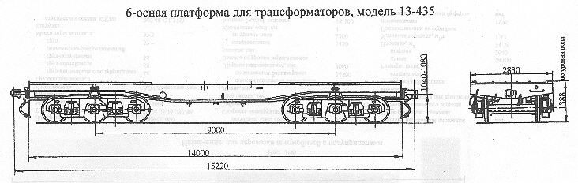

Назначение: для перевозки постоянно установленного на ней поглощающего трансформатора с аппаратурой охлаждения
Параметры
| Номер проекта | 435.00.000 |
| Технические условия | ТУ 24-5-091-77 |
| Модель вагона | 13-435 |
| Тип вагона | 368 |
| Изготовитель | СВЗ |
| Грузоподъемность, т | 93 |
| Масса тары вагона, т | 29 |
| Нагрузка: статическая осевая, кН(тс) |
199,1(20,3) |
| погонная, кН/м(тс/м) | 78,6(8,02) |
| Скорость конструкционная, км/ч | 100 |
| Габарит | 1-Т |
| База вагона, мм | 9000 |
| Длина, мм: по осям сцепления автосцепок |
15220 |
| по концевым балкам рамы | 14000 |
| Ширина максимальная, мм | 2830 |
| Высота от уровня верха головок рельсов, мм: максимальная |
|
| до уровня настила пола | 1388 |
| Количество осей, шт. | 6 |
| Модель 3-осной тележки | 18-102 |
| Наличие переходной площадки | нет |
| Наличие стояночного тормоза | есть |
| Год постановки на серийное производство | 1973 |
| Возможность установки буфера | нет |